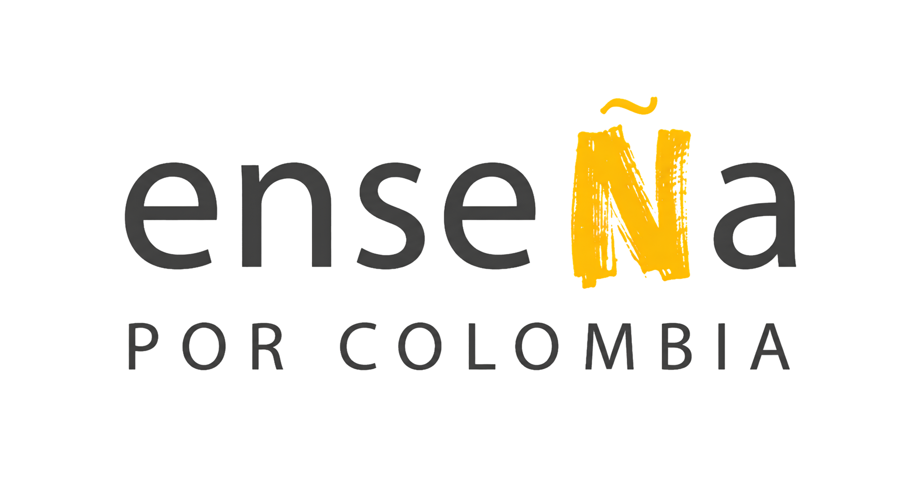

Aprendizaje académico
El desarrollo socioemocional puede fortalecer los logros en lectura, matemáticas y pruebas estandarizadas.

Una guía para conectar fundamentos y prácticaHabilidades socioemocionales: el cimiento del aprendizaje y el liderazgo colectivo.
Una mirada a la evidencia internacional, al panorama normativo colombiano y a la visión de Enseña por Colombia.
Según CASEL, el aprendizaje socioemocional (SEL) es el proceso mediante el cual niños, jóvenes y adultos adquieren y aplican conocimientos, habilidades y actitudes para desarrollar identidades saludables, gestionar emociones, alcanzar metas individuales y colectivas, sentir y mostrar empatía, establecer relaciones de apoyo y tomar decisiones responsables.
El desarrollo socioemocional puede fortalecer los logros en lectura, matemáticas y pruebas estandarizadas.
Promueve el sentido de pertenencia y apoya una asistencia escolar más constante.
Se asocia con mejores oportunidades de empleo, estabilidad financiera y salud integral en la adultez.
Puede reducir el estrés y las dinámicas reactivas, y fortalecer factores de protección de la comunidad educativa.
Estos beneficios sintetizan el documento base y los referentes de CASEL. Las HSE se integran con el aprendizaje académico; no lo reemplazan.
Una trayectoria de formación integral, ciudadanía y convivencia.
Promueve la educación socioemocional en preescolar, básica y media. El documento base destaca la pedagogía de la confianza y el cuidado.
El documento base la vincula con el fortalecimiento de las habilidades sociales y emocionales para la convivencia pacífica y el bienestar escolar.
Según el documento base, integra el componente de competencias socioemocionales en los Proyectos Educativos Institucionales (PEI), con enfoque territorial y diferencial.
Crea e implementa la Cátedra de Educación Emocional para desarrollar la conciencia, la regulación y la autonomía emocional.
El documento base presenta «Un viaje curricular», referente del MEN de 2026, mediante un modelo concéntrico que conecta formación ciudadana y desarrollo socioemocional.
Una conexión para tu práctica: integrar las HSE de manera intencional y contextualizada, cuidar los vínculos y reconocer las necesidades y fortalezas de tu comunidad.
Panorámica adaptada del documento de contenido. Para ampliar, consulta los textos oficiales de las leyes en www.secretariasenado.gov.co y los recursos del MEN en www.mineducacion.gov.co.
En Enseña por Colombia y en la red global Teach For All, desde el marco «Cultivando Líderes Juntos», las HSE movilizan aprendizajes académicos de rigor y una visión de liderazgo colectivo.
Autoconocimiento · Autoeficacia · Motivación · Autocontrol · Perseverancia
Reconocerse como agente de cambio y autorregularse para disponer el aula hacia un aprendizaje seguro y efectivo.
Bienestar colectivo · Integridad · Proyecto de vida
Evaluar consecuencias éticas de las acciones cotidianas y construir un proyecto de futuro consciente.
Empatía · Comunicación asertiva · Resolución de conflictos
Establecer vínculos respetuosos, escuchar activamente y transformar diferencias mediante el diálogo.
Colaboración · Propósito · Respeto por la diferencia
Unir talentos e identidades diversas hacia metas compartidas de transformación académica y comunitaria.
Mi convicción: ¿por qué es indispensable el desarrollo socioemocional en mi contexto?
Mi acción: ¿qué práctica concreta integraré en mi próxima clase?
Mi propósito: ¿cómo contribuirá al aprendizaje y al liderazgo de mis estudiantes?
Construye tu manifiesto mediante elecciones en el recurso interactivo y guarda una copia personal.
Guía de contenido «La Brújula de las HSE: Evidencia Internacional y Panorama Normativo Nacional» y Diseño Instruccional de HSE, Enseña por Colombia.
CASEL · Marco y definición de SEL: casel.org/fundamentals-of-sel/what-is-the-casel-framework/
CASEL · Investigación: casel.org/fundamentals-of-sel/what-does-the-research-say/